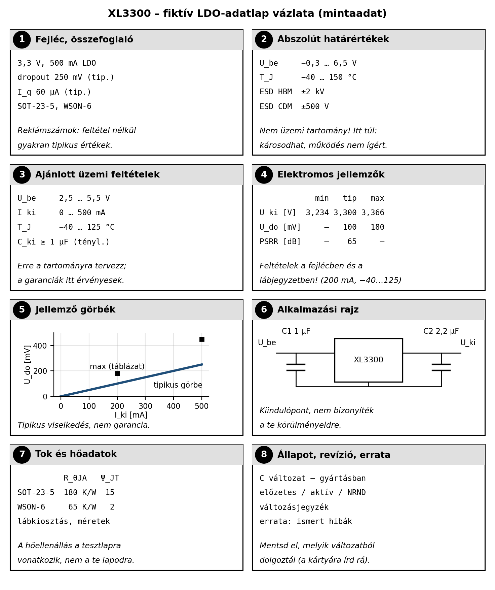
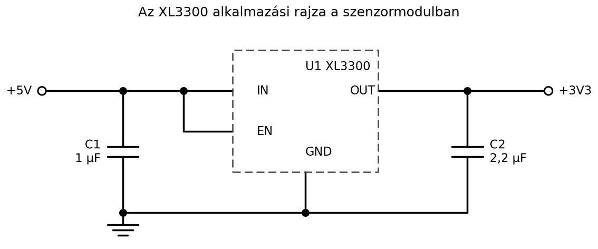
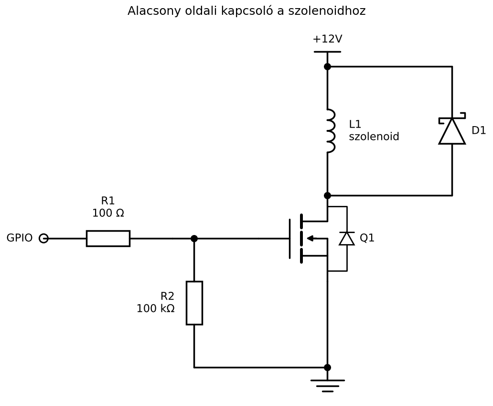

Eddig sok adatlapi számot használtál: a dióda nyitófeszültségét, a MOSFET értékét, a tekercs telítési áramát. Most megtanulod, hogy egy adatlapban (datasheet) melyik számra szabad tervezni, és melyikre nem. Az alfejezet végére:
Ami ehhez kell: A multiméter, Teljesítmény, hőfoktényező, feszültségtűrés és típusok, Valós induktivitás és ferritgyöngy, A MOSFET működése és adatlapja, Biztonságos működési tartomány, lavina és induktív terhelés és Hatásfok, veszteségek, alkatrészválasztás és kapcsolóüzemű zaj.
A szenzormodul 3,3 V-os sínjét egy lineáris szabályzó (LDO) állítja elő az 5 V-os sínről. Az interneten talált alkatrész első oldala ezt hirdeti: „500 mA, 100 mV dropout, 60 µA nyugalmi áram, 65 dB zavarelnyomás”. A modul legfeljebb kb. 198 mA-t kér a 3,3 V-os sínről. Elsőre minden rendben.
Csakhogy a hirdetett 100 mV nem biztos, hogy a te példányodra, a te hőmérsékleteden is igaz. Az 500 mA sem azt jelenti, hogy a tok ennyit gond nélkül elvisel. A jó kérdés nem az, hogy „mit tud ez az IC”, hanem az, hogy mit ígér a gyártó, milyen feltételek között.
Az adatlap olyan, mint egy szerződés. A határokat (min, max) a gyártó vállalja, de csak a mellé írt feltételek között. A tipikus érték inkább termékleírás: „a darabok nagy része körülbelül ilyen”. Az abszolút határértékek a károkozás küszöbei: ezeket átlépve a gyártó semmit sem vállal. Az analógia annyiban sántít, hogy a gyártó a „szerződést” egyoldalúan módosíthatja (új változat), és egyes pontok mögött nincs darabonkénti ellenőrzés.
Az ábra egy kitalált alkatrész, az XL3300 (3,3 V-os LDO) adatlapjának vázát mutatja. Ilyen termék nem létezik, minden száma mintaadat, de a felépítés a valódi adatlapokét követi.

Minden adatlapnak van változata (revision) és dátuma; a végén lévő változásjegyzék megmondja, mi módosult. A termék állapota lehet előzetes (preliminary: az értékek még változhatnak), gyártásban lévő (active), új tervbe nem ajánlott (NRND, not recommended for new designs) vagy kifutott (obsolete). Előzetes vagy NRND alkatrészt új tervbe csak tudatos döntéssel teszünk. Az errata a gyártó által elismert, ismert hibák listája, gyakran külön dokumentum; mikrovezérlőknél rendszeresen hosszú. Az XL3300 kitalált errata-pontja például: „nagyon lassan felfutó engedélyezőjelnél a kimenet többször ki-be kapcsolhat”. Az ilyesmi a kapcsolási rajzon is nyomot hagy (például Schmitt-bemenet vagy meredekebb engedélyezőjel kell).
Definíció. Az abszolút határérték (absolute maximum rating) olyan igénybevétel, amelynek átlépése maradandó károsodást vagy rejtett megbízhatóságromlást okozhat. A határon belül, de az ajánlott tartományon kívül a gyártó nem garantálja a működést.
Definíció. Az ajánlott üzemi feltételek az a tartomány, amelyben az elektromos jellemzők táblázata (ha mást nem ír) érvényes, és amelyben az alkatrész rendeltetésszerűen használható.
Három zónát kapsz tehát:
| Zóna | Példa az XL3300 bemenetén | Mit várhatsz? |
|---|---|---|
| ajánlott üzem | 2,5 … 5,5 V | a megadott adatok érvényesek |
| a kettő között | 5,5 … 6,5 V | valószínűleg nem megy tönkre, de nincs garancia |
| abszolút határon túl | 6,5 V felett vagy −0,3 V alatt | károsodhat, akár azonnal |
Néhány fontos következmény:
Az abszolút határértékek között gyakran ott az ESD-osztály: mekkora elektrosztatikus kisülést visel el az alkatrész a kezelés során. A két gyakori modell a HBM (human body model, emberi test) és a CDM (charged device model, a feltöltött alkatrész kisülése) – az XL3300-nál ±2 kV, illetve ±500 V (mintaadat; a vizsgálati módszert a JEDEC JS-001 és JS-002 írja le, ellenőrizendő: a hatályos kiadás). Ez a beültetés közbeni túlélésre vonatkozik, nem a készülék csatlakozóján érkező kisülésre; arról az ESD- és túlfeszültség-védelem az áramkörben szól.
Továbbvitt eredmény. Az abszolút határérték nem üzemi tartomány: a tervet az ajánlott üzemi feltételeken belül kell tartani, és a tranzienseket is ellenőrizni kell. Erre épít a Derating, tűrésanalízis és megbízhatóság és az ESD- és túlfeszültség-védelem az áramkörben.
Az XL3300 elektromos jellemzőinek egy része (mintaadat; feltétel, ha nincs más írva: = −40 … 125 °C):
| Jellemző | min | tip | max | Feltétel | Fajta |
|---|---|---|---|---|---|
| kimeneti feszültség | 3,234 V | 3,300 V | 3,366 V | = 3,8…5,5 V; 1…500 mA | tesztelt |
| dropout | – | 100 mV | 180 mV | 200 mA | tesztelt |
| dropout | – | 250 mV | 450 mV | 500 mA | tesztelt |
| nyugalmi áram | – | 60 µA | 100 µA | terhelés nélkül | tesztelt |
| áramkorlát | 550 mA | 800 mA | – | – | tesztelt |
| PSRR (1 kHz) | – | 65 dB | – | 200 mA; 25 °C | csak tipikus |
| termikus lekapcsolás | – | 165 °C | – | – | tervezéssel, nem tesztelt |
A dropout a legkisebb bemenet–kimenet feszültségkülönbség, amellyel a szabályzó még szabályoz; a PSRR (power supply rejection ratio) azt mutatja, mennyire nyomja el a bemeneti zavart (mindkettő: Teljesítménymérleg, lineáris szabályzó és LDO).
Definíció. A garantált érték olyan minimum vagy maximum, amelyet a gyártó a megadott feltételek között minden szállított darabra vállal. Háttere lehet darabonkénti vizsgálat (tesztelt), vagy mintavétel és tervezési megfontolás („guaranteed by design/characterization”, tervezéssel garantált, nem tesztelt). A tipikus érték egy jellemző, középső érték, többnyire 25 °C-on; semmilyen darabra nem ígéret.
A tervezési szabály egy mondat: mindig a rád nézve kedvezőtlen oldal garantált határát használd. Ha a követelmény (valami nem lehet túl nagy), akkor kell; ha , akkor . A megmaradó tartalékot relatív alakban is kiírhatjuk:
Itt és ugyanabban az egységben van, ezért dimenzió nélküli. A alakra érvényes; pozitív azt jelenti, hogy marad tartalék.
Gondolkodj előre: egy tervben 120 mV dropoutot feltételezel 200 mA-en, mert „a tipikus 100 mV, adtam rá 20 % ráhagyást”. A darabok hány százalékánál lesz ez kevés?
A válasz: az adatlapból nem lehet megmondani. Az ábra kitalált eloszlásával az A tételnél 16 %, a kissé eltolódott B tételnél 60 % – pedig mindkét tétel hibátlan, hiszen minden darab a 180 mV-os maximum alatt van. A gyártó csak a határt ígéri; az átlag, a szórás és az eloszlás alakja gyártási tételenként változhat. A 180 mV-ra tervezett kapcsolás mindkét tétellel működik.
A másik csapda a feltétel. A táblázat PSRR-sora 25 °C-ra és 1 kHz-re szól: a buck konverter 500 kHz-es hullámosságáról semmit sem mond. Ugyanígy a MOSFET-nél a csak a megadott mellett garantált.
A jellemző görbék szinte mindig tipikus értékeket mutatnak. Arra jók, hogy lásd a tendenciát (merre és mennyit változik valami). Bevett mérnöki gyakorlat a garantált 25 °C-os értéket a tipikus görbéről leolvasott arányszámmal átszámítani más hőmérsékletre, de ez már becslés, tartalékot kér.
Az alkatrészeket gyakran hőmérsékleti osztályba sorolják; szokásos, de gyártónként eltérő határok: kereskedelmi 0 … 70 °C, ipari −40 … 85 °C, gépjárműipari −40 … 125 °C. A gépjárműipari minősítéshez az AEC-Q dokumentumcsalád tartozik (például AEC-Q100 integrált áramkörökre; ellenőrizendő: a hatályos kiadás fogalmai és fokozatai) – ez vizsgálati követelményrendszer, nem pusztán szélesebb hőmérséklet. A szenzormodul környezete −20 … 60 °C: kereskedelmi tartományú alkatrész ehhez nem elég, mert −20 °C-on kívül esik.

A rajzon az EN (engedélyező) láb a bemenetre van kötve, tehát a szabályzó mindig bekapcsolt. Az adatlap 1 µF tényleges kimeneti kapacitást kér; a 2,2 µF-os névleges érték a kerámiakondenzátor DC-bias, hőmérséklet- és tűrésveszteségére hagy helyet (Kondenzátorfajták és dielektrikumok). A gyártó rajza egy adott mérési környezetben működött; a te bemeneti vezetéked, hőmérsékleted és terhelésed más lehet.
Definíció. A tervezési adatkártya egy alkatrész rövid kigyűjtése a konkrét tervhez: csak azok a paraméterek, amelyektől a terv helyessége függ, mindegyikhez az érték, a feltétel, a fajtája (tesztelt, tervezéssel garantált, tipikus, görbe) és a hivatkozás (oldal, táblázat, adatlapváltozat).
Sablon:
| Mező | Kitöltendő |
|---|---|
| alkatrész, gyártói rendelési kód, tok | a pontos változat, nem csak a családnév |
| adatlap változata és dátuma; termékállapot | errata ellenőrizve? |
| abszolút határok és a terv legrosszabb igénybevétele | tranzienssel együtt |
| ajánlott üzemi feltételek | minden belül van? |
| tervezési paraméterek | min/max, feltétel, forrás |
| csak tipikus adatok, amelyekre mégis támaszkodsz | hogyan fedezed: tartalék vagy mérés |
| nyitott kérdések | gyártói megkeresés, prototípus-mérés |
A kitöltött kártya a terv bizonyítéka: egy átvizsgáló visszakeresheti, melyik szám honnan jött.
Továbbvitt eredmény. Garantált értékre tervezünk, a rád nézve kedvezőtlen oldalról, a feltételek ellenőrzésével, és a kigyűjtött számokat adatkártyán rögzítjük forrással. Ezt a módszert használja a Derating, tűrésanalízis és megbízhatóság, a Követelményektől a blokkdiagramig, a Tervezési átvizsgálás és átadás a NYÁK-tervezésnek, valamint az 1. záróprojekt: védett tápegység 12 V-ról 5 V-ra és 3,3 V-ra, a 2. záróprojekt: érzékelő-illesztő és mérőlánc és a 3. záróprojekt: MOSFET-es meghajtó induktív terheléshez.
A) Az XL3300 a 3,3 V-os sínen. Feltevés (a példa saját adata): az 5 V-os sín 4,85 … 5,15 V között van (±3 %). A 3,3 V-os sín legnagyobb árama a teljesítménymérleg szerint 198 mA.
Az adatlap hőadatai: SOT-23-5 tokban = 180 K/W, WSON-6 tokban 65 K/W (mintaadat). A hőellenállás megmutatja, hány kelvinnel melegszik a félvezető lapka (záróréteg, junction) wattonként a környezethez képest, tehát . A 60 °C-os környezetben SOT-23-5-tel °C, WSON-6-tal °C. Mértékegység: W · K/W = K.
Eredmény: a SOT-23-5 túllépi a 125 °C-os ajánlott határt (bár az abszolút 150 °C alatt marad), tehát a WSON-6 változatot választjuk. Az adatlapi korlátairól a Hőtervezés és vezetőmelegedés szól.
B) Az MN1 MOSFET 3,3 V-os kapulábról. A szolenoidot az MN1 kapcsolja, a mikrovezérlő GPIO-ja hajtja ( V). Az adatlap maximumot csak 2,5 V-on (50 mΩ) és 4,5 V-on (35 mΩ) ad. A 3,3 V-os pont nincs garantálva, ezért a kisebb, még garantált kapufeszültség értékét vesszük: 50 mΩ. A tipikus görbéről leolvasható kb. 41 mΩ csak tájékoztatás. 100 °C-os záróréteg-hőmérsékleten a tipikus hőfokgörbe 1,36-os szorzót ad, így a tervezési érték mΩ, a veszteség 1 A-en mW. Józanész-ellenőrzés: a tipikus 25 °C-os 41 mW-hoz képest ez 66 %-kal több – ennyit rejtene el, ha az összefoglaló kedvező számait használnád.

A könyv ehhez a fejezethez tartozó modulja
(elkit.extra_elch20) tartalmazza a fiktív adatlapot és egy
adatkártyát, amely a garancia nélküli adatot megjelöli.
from elkit import extra_elch20 as ex
card = ex.DataCard(ex.xl3300())
card.operating("u_in", 4.85, 5.15)
card.operating("i_out", 0.198)
card.parameter("u_out", "max")
card.parameter("u_do_200", "max")
card.parameter("i_lim", "min")
card.parameter("psrr", "min")
print(card.table())
for pack, th in ex.XL3300_THERMAL.items():
p = (5.15 - 3.234) * 0.198 + 5.15 * 100e-6
print(f"{pack:<9} P = {p:.3f} W, T_J = {60 + p * th['r_ja']:.1f} °C")XL3300 (fiktív), C változat, gyártásban
tétel érték hivatkozás minősítés
bemeneti feszültség 5.15 V (ajánlott ≤ 5.5 V) abs. 6.5 V rendben
kimeneti áram 198 mA (ajánlott ≤ 500 mA) abs. 800 mA rendben
U_ki, teljes tartomány max 3.366 V 5. old., 2. sor tesztelt
dropout, 200 mA max 180 mV 5. old., 3. sor tesztelt
áramkorlát min 550 mA 5. old., 6. sor tesztelt
PSRR, 1 kHz tip. 65 dB 6. old., 1. sor NINCS GARANCIA
SOT-23-5 P = 0.380 W, T_J = 128.4 °C
WSON-6 P = 0.380 W, T_J = 84.7 °CA PSRR-sor jelzése a lényeg: ha a mérőláncnak szüksége van rá, vagy tartalékot kell tervezni (például külön szűrő), vagy a prototípuson mérni kell.
Az interaktív ábrák a HTML-kiadásban futnak; PDF-ben a statikus képek ugyanazt az alaphelyzetet mutatják.
| Tünet | Ok | Javítás |
|---|---|---|
| A prototípus jó, a sorozat egy része nem indul alacsony tápon | tipikus dropoutra tervezés | a garantált maximummal számolni a teljes hőmérséklet-tartományon |
| Alkatrész hónapok múlva meghibásodik | tartós üzem az abszolút határ közelében, vagy rövid tranziens a határon túl | ajánlott tartományon belül maradni; tranziensre fogás, derating |
| A MOSFET forró, pedig „35 mΩ-os” | a 4,5 V-os érték 3,3 V-os meghajtásnál | a meghajtófeszültségnek megfelelő vagy annál kisebb tesztpont értéke |
| A mért zaj jóval nagyobb az adatlapinál | tipikus PSRR más frekvencián és hőmérsékleten | feltételek elolvasása, szűrő, mérés |
| Az alkalmazási rajz másolata gerjed | a kondenzátor tényleges kapacitása vagy ESR-je a feltételen kívül | a DC-bias és hőmérséklet utáni értéket ellenőrizni |
| A rendelt alkatrész másképp viselkedik | más utótagú változat vagy új adatlap-revízió, errata | a rendelési kódot és a revíziót a kártyára írni |
Gyakori félreértés: „a tipikus érték a darabok többségére igaz, ezért jó közelítés”. Közelítésnek igen, garanciának nem: a tipikus értéktől a darabok kb. fele a rossz irányban tér el, és ha a terv a tipikusnál éppen kijön, a másik fele hibás lehet.
(min, tip, max, követelmény_iránya, határ) alapján megadja,
teljesül-e a követelmény garantáltan, csak tipikusan, vagy egyáltalán
nem. Próbáld ki az XL3300 dropout- és PSRR-sorain (120 mV-os és 60 dB-es
követelmény).Az adatlap számai nem egyenértékűek. Az abszolút határérték a károsodás küszöbe, nem üzemi tartomány; tervezni az ajánlott üzemi feltételeken belül szabad, tranziensekkel együtt. A táblázat minimuma és maximuma garancia (teszteléssel vagy tervezéssel), de csak a megadott feltételek között; a tipikus érték és a görbe nem ígéret. Mindig a rád nézve kedvezőtlen oldal garantált határával számolunk; ha ilyen nincs, tartalékot vagy mérést tervezünk. Az alkalmazási rajz kiindulópont, nem bizonyíték. A változatot, a termékállapotot és az erratát ellenőrizzük, a tervezési paramétereket adatkártyára írjuk értékkel, feltétellel, fajtával és hivatkozással – ez kell a Derating, tűrésanalízis és megbízhatóság, Követelményektől a blokkdiagramig és Tervezési átvizsgálás és átadás a NYÁK-tervezésnek–3. záróprojekt: MOSFET-es meghajtó induktív terheléshez alfejezethez. Az abszolút határ és az üzemi tartomány különbségére a Derating, tűrésanalízis és megbízhatóság és az ESD- és túlfeszültség-védelem az áramkörben épít.
def verdict(lo, typ, hi, sense, limit):
"""sense: '<=' (nem lehet nagyobb) vagy '>=' (nem lehet kisebb)."""
worst = hi if sense == "<=" else lo
ok = lambda v: v <= limit if sense == "<=" else v >= limit
if worst is not None:
return "garantáltan teljesül" if ok(worst) else "nem garantált: a határ sérti"
return "csak tipikusan teljesül" if ok(typ) else "tipikusan sem teljesül"
print("dropout ≤ 120 mV:", verdict(None, 100, 180, "<=", 120))
print("PSRR ≥ 60 dB: ", verdict(None, 65, None, ">=", 60))dropout ≤ 120 mV: nem garantált: a határ sérti
PSRR ≥ 60 dB: csak tipikusan teljesülAz első sorban a tipikus 100 mV teljesítené a követelményt, a garantált maximum nem – a tervnek a maximum számít.